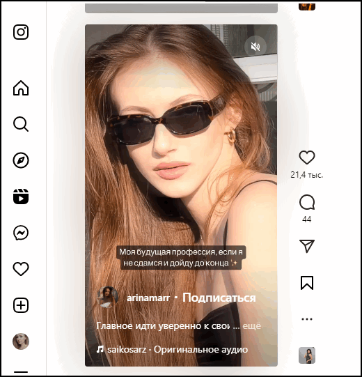
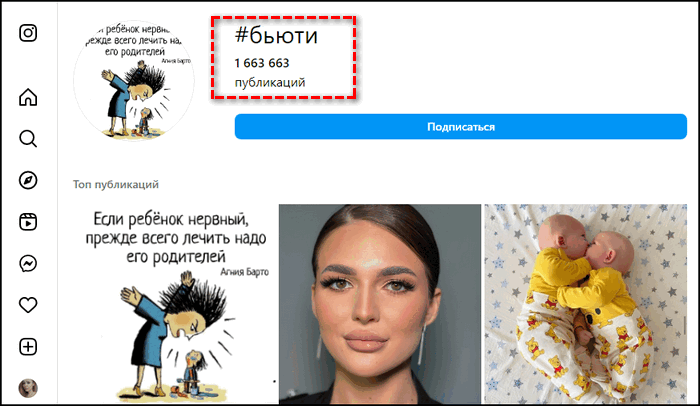

Накрутить охваты в Инстаграме: ТОП 20 бесплатных и платных способов

- На что влияют охваты в Инстаграме*
- ТОП-15 сервисов накрутки охвата в Инстаграм*
- №1 @V_TOP_soc_bot
- №2 Smmplace.ru
- №3 SMM-bloger.ru
- №4 @otec_smm_bot
- №5 TapLike
- №6 PRSkill
- №7 SMOService
- №8 SMMPrime
- №9 TmSMM
- №10 SMMRoot
- №11 LikeMania
- №12 BigSmm
- №13 SMMYT
- №14 LikeHub
- №15 Cheatbot
- №16 SMMNakrutka
- ТОП-5 бесплатных способов
- №2 Кликбейт: как правильно
- №3 Актуальные Рилс
- №4 Сотрудничество с блогерами
- №5 Хештеги
- Почему охваты падают
Накрутка охватов в Инстаграме* поможет быстрее развить аккаунт, предложить рекламодателям свои услуги и получить новую аудиторию. Кроме естественных способов продвижения можно воспользоваться онлайн-сервисами.
На что влияют охваты в Инстаграме*
Охват – это показатель количества аккаунты, которым была продемонстрирована запись. Это как профили подписчиков, так и уникальные посетители. То есть, чем популярнее запись, тем больше будет значение. Для чего понадобятся эти данные:
- показать рекламодателю, что публикации популярны;
- для блогеров, чтобы узнать интересы аудитории;
- чтобы внести изменения и выявить ошибки в продвижении;
- узнать тип аудитории. Географические данные, возраст и половая принадлежность.
При сотрудничестве с брендами, другими блогерами показатели статистики показывают скриншотом, но не один пост, а последние 5-10. Поэтому накручивать просмотры на один пост не имеет смысла: лучше комплексное продвижение, которое увеличит посещение страницы и поможет набрать первую 1000 подписчиков.
ТОП-15 сервисов накрутки охвата в Инстаграм*
Сервис накрутки – это быстрый вариант, как получить охваты и активность под публикациями. Пользователи выбирают способ с комплексным продвижением, но если необходима всего одна услуга – она также доступна в одиночном формате.
Перед накруткой рекомендуется удалить ботов из своего аккаунта в Инстаграм*. Это позволит значительно увеличить охваты от новых подписчиков.
Накрутка просмотров с охватом доступна в сервисах в качестве заданий:
- с автоматической проверкой. Заказчик ставит задачу и следит за ее завершением;
- с дополнительной проверкой. Нужно просматривать каждое выполненное задание.
Последний вариант касается просмотров Историй, так как этот раздел отслеживается и можно увидеть профили тех, кто посещал аккаунт.
№1 @V_TOP_soc_bot
На данный момент лидер в накрутке охватов Инстаграм*, цены начинаются от 10 копеек за услугу и это самые низкие на рынке РФ. Качество от среднего до премиум, количество услуг самое большое в сравнении с конкурентами.
№2 Smmplace.ru
Сервис предлагает отдельные услуги по просмотру публикаций и Историй. За накрутку по тарифу «Эконом» пользователю нужно заплатить 0,19, а за премиальный – 0,29 рублей. Пакеты отличаются максимальным количеством привлеченных исполнителей и их качеством.
№3 SMM-bloger.ru
В сервисе доступно быстрое оформление задания и через регистрацию личного кабинета. С помощью второго варианта можно отслеживать ход выполнения задания: останавливать, запускать заново, докупать услуги. За просмотры публикации и Историй нужно заплатить 0,25 рублей.
№4 @otec_smm_bot
В сервисе доступно оформление услуги через регистрацию. Заказчик указывает географические данные, возраст, половую принадлежность. Цена за просмотры видео или Сторис отличаются по продолжительности: до 1 минуты за 1,5 рублей до 30+ за 22 рубля за один просмотр. Заказчик должен самостоятельно проверить выполнение задачи, указав в описании требования: предоставить скриншот, написать ник.
№5 TapLike
Автоматическая услуга будет запущена в течение 10 минут после оформления. За минимальное количество зрителей в 100 человек нужно заплатить 3.00 рубля. Отследить выполнение задачи можно через личный кабинет или же воспользоваться оформлением быстрой услуги и подождать, пока в профиле появится активность.№6 PRSkill
Отдельная услуги по охватам, просмотру профиля и публикациям. Есть три тарифа: эконом, стандарт и премиум. Их отличие в максимальном количестве исполнителей, которые можно получить путем накрутки, скорость, гарантии. По стандартному тарифу оплата за одно посещение и увеличение охвата – 0,07.№7 SMOService
Также предлагает отдельные услуги охвата и просмотров. Три разных тарифа на оформление охвата, которые отличаются по цене и качеству исполнителей. Заказчик может выбрать ботов, пользователей с верификацией и реальных исполнителей. Последние доступны по тарифу 0,16 рублей за один просмотр.№8 SMMPrime
В сервисе есть накрутка просмотров на видео в Ленте и Reels. Предложены по одинаковому тарифу в 0,9 за каждое действие. Воспользоваться услугами можно после регистрации личного кабинета: при завершении задачи заказчик будет уведомлен и сможет заново запустить услугу накрутки.№9 TmSMM
Три отдельные услуги по просмотру страницы, Историй и Reels. За просмотр аккаунта заказчику придется заплатить от 2,7 за 100 до 19 рублей. Предложено пять разных пакетов услуг, которые включают: просмотры только от исполнителей из СНГ, зарубежа или России.№10 SMMRoot
Визиты, просмотры публикаций+охват и Reels – вынесено отдельными услугами. Визиты аккаунта стоят 0,16 за каждого привлеченного, просмотры постов + охват - от 0,01 до 0,32 рубля за реальных зрителей. Для Reels и Историй предусмотрены дополнительные услуги в 0,14 за один просмотр и 0,08 рублей соответственно.№11 LikeMania
Охват и показы публикации оценены в 6 рублей за 100 привлеченных. Чтобы оформить заказ необязательно регистрироваться. Нужно перейти к графе создания быстрого задания, указать нужное количество зрителей и оплатить одним из удобных способов: картой, электронным кошельком.№12 BigSmm
В сервисе есть пункт статистика, но доступен только регистрации и находится пока в тестовом режиме. Поэтому заказчики могут выбрать пункт: «Просмотры видео/Историй/Reels». За 1000 действий владельцу блога нужно заплатить 7 рублей.№13 SMMYT
SMMYT предлагает отдельные услуги: просмотры, охваты и посещения профиля. При оформлении услуги можно выбрать параметры: тип аудитории (боты, реальные пользователи, подтвержденные аккаунты), скорость, гарантии, география потенциальных исполнителей. За охваты от реальных людей по тарифу «Премиум» - 5,26 рублей, Эконом от ботов – 3,08 рублей.№14 LikeHub
Клиент может выбрать один из пакетов услуг:- охват публикации;
- охват поста + статистика;
- дешевые или быстрые сохранения.
№15 Cheatbot
Есть улучшение статистики, которое направлено на охваты. За 0,009 рублей клиент получает активность от ботов и возможность оказаться в Рекомендациях социальной сети. Сервис предупреждает, что воспользоваться услугами возможно лишь после регистрации.№16 SMMNakrutka
Предлагает четыре пакета услуг, где совмещено посещение профиля и соответствующее повышение охвата. Увеличить посещаемость страницы можно только аудиторией из СНГ или отказаться от привязки к местоположению. Минимальная цена за одного зрителя – 3, максимальная – 15 рублей.
ТОП-5 бесплатных способов
Накрутка охватов Сторис в Инстаграме* возможна через бесплатные способы. Это органическое повышение активности, которое может занять от недели до года. Но привлеченная аудитория и охваты будут реальными. ТОП-5 способов:
- кликбейтные названия текстов. Но это не значит, что сам текст будет значительно отличаться;
- хештеги. Несмотря на то, что многие эксперты считают этот метод «мертвым» - он до сих пор актуален для тех, кто продвигает магазины, услуги;
- интересны Reels с популярными треками;
- сотрудничество с другими блогерами, которые могут прорекламировать аккаунт в Сторис;
- проведение бесплатных марафонов и розыгрышей.
Розыгрыш на старте – удобный вариант, если блогер желает получить аудиторию в короткий срок, мы собрали ТОП 20 идей конкурсов для наших читателей.
Но при этом нельзя забывать о качестве контента, регулярном размещении. То есть, аудитория приходят в конкурсный аккаунт задержится и подпишется в том случае, если её заинтересуют публикации.
№2 Кликбейт: как правильно
Авторы контента часто допускают ошибку в размещении кликбейта. Создают тексты или видео, которые отличаются от названия или темы. Например, под громким заголовком «Я не знала, что со мной это случится» рассказывают о повседневности. Оригинальные способы применения кликбейта для повышения охвата:
- специальные ошибки в главной цитате. Аудитория оставит возмущенные комментарии, но таким образом повысятся охваты.
- гиперболизация события. Должно что-то произойти, но значение события можно слегка преувеличить.
- обратный эффект. Спокойный заголовок, но текст или видео вызывают сильные эмоции у читателя.
Но постоянно использовать кликбейт в публикациях не стоит. В конце, аудитория перестанет реагировать на заявления от блогера, тем самым будет потеряно доверие.
№3 Актуальные Рилс
Раздел с короткими видеозаписями получил популярность именно из-за продолжительности клипов. В видеоряд длинной в 15-30 секунд автор помещает смысл, делает вывод или просто предлагает релаксирующий контент.

Популярные темы для Reels:- до/после. Пользователи размещают свои фото с 2007-2010 года и сейчас;
- взаимоотношения и переписки;
- трудные жизненные ситуации, которые были решены автором контента;
- природа под красивое музыкальное сопровождение.
Для экспертов подойдут темы, где они открывают «секреты» социальных сетей, под заголовком «Спорим вы не знали?». Для интернет-магазинов – демонстрация товаров и новинок, с разбором составов.
№4 Сотрудничество с блогерами
Сотрудничество с другими блогерами поможет в повышении узнаваемости бренда, компании или страницы автора. Форматы пиара:
- упоминание в Сторис. Другой автор рекомендует страницу прикрепляя ссылку;
- совместная публикация. Удобнее всего, если оба автора живут в одном городе;
- отметка под постом. Например, отсылка как к хорошему специалисту или знакомому.
Сотрудничество с другими блогерами редко бывает бесплатным, если только не взаимный пиар, но в любом случае нужно анализировать аккаунт конкурента перед тем как покупать рекламу. Но для страниц интернет-магазинов условия отличаются тем, что они могут предложить услуги по бартеру или за тестирование товара. И блогер создает видео или текстовый контент в качестве положительного отзыва.
№5 Хештеги
Теги – это вариант сортировки контента и отметка для его дальнейшего поиска. То же касается упоминания тега в своем профиле, под публикациями. Применяя к постам тематические хештеги, нужно предварительно проверять их на количество упоминаний. Чем больше число просмотров, тем лучше для автора.

Как проверить число упоминаний в самом Инстаграме*:- Зайти в социальную сеть – нажать по кнопке: «Интересное».
- Указать в поиске интересующий тег – рядом с запросом появится количество упоминаний.
Для продвижения запись не рекомендовано применять свыше 40 хештегов. На некоторые записи и вовсе не стоит добавлять теги: под селфи, фотографиями с родными и близкими.
Почему охваты падают
Основная проблема авторов в Инстаграме*: почему падают охваты, ведь публикации выполнены качественно и применены любые доступные способы продвижения. Чтобы на страницу подписывались, а посты попадали в Рекомендации, нужно идти на небольшие хитрости:
- делиться записями в других социальных сетях, где у автора больше подписчиков;
- предлагать друзьям и близким первыми ставить лайки и оставлять комментарии;
- пробовать нестандартные форматы, задействовать тренды для создания видео;
- изучать новые приложения и их функции.
Даже профессионально снятые клип под популярный трек может не попасть в Рекомендации только по той причине, что он не заинтересовал аудиторию. Или был прорекомендован не той ЦА. Инстаграм* не редко предлагает посты пользователям, которые заведомо незаинтересованны таким контентом или имеют противоположное мнение. И последняя причина, почему аккаунт не попадает в Рекомендации и не получает охваты – теневая блокировка. Она возникает, если автор использовал запрещенные слова в текстах, размещал контент противоречащий правилам сообщества (например, критика чужого мнения или внешности), получил несколько жалоб на аккаунт.